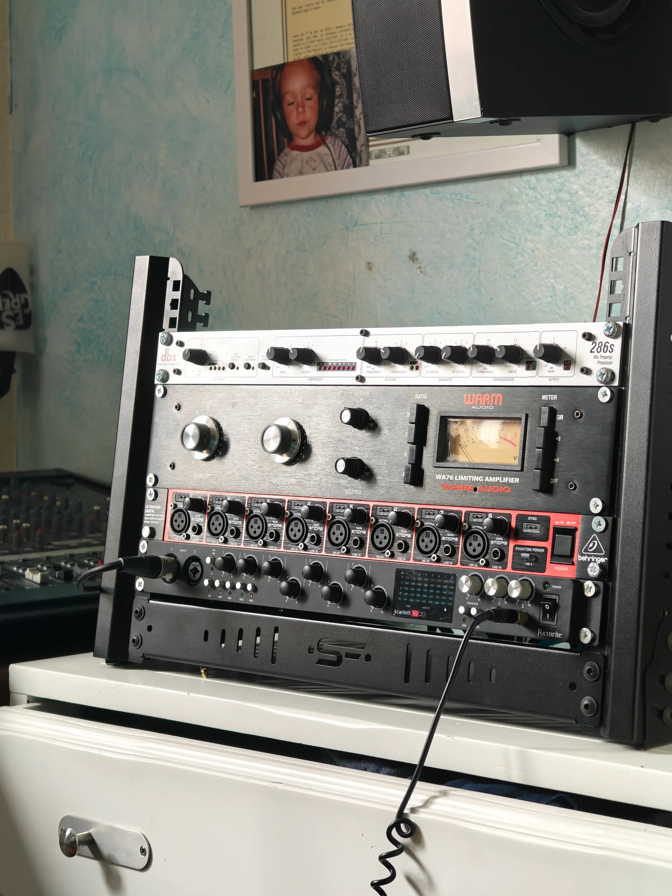
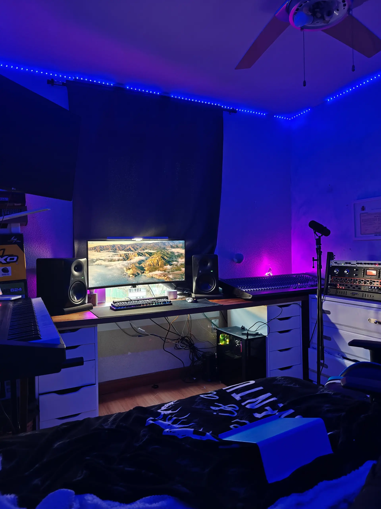

Producción musical
Beatmaking, arreglos y dirección creativa para convertir una referencia, una letra o una maqueta en una canción completa.
mirma.wav
Estudio de música · Mallorca / Online
Producción, grabación, mezcla y mastering con dirección cercana, criterio técnico y un objetivo claro: terminar música que quieras enseñar.
Sesiones presenciales y proyectos online.
Servicios
Puedes entrar en cualquier punto del proceso. Construimos el servicio alrededor de la canción, no al revés.
Beatmaking, arreglos y dirección creativa para convertir una referencia, una letra o una maqueta en una canción completa.
Sesiones vocales e instrumentales cuidadas, con acompañamiento durante la interpretación y atención al detalle desde la toma.
Profundidad, claridad e intención. Cada elemento encuentra su sitio sin borrar la personalidad de la producción.
El último ajuste de balance, impacto y traducción para que el tema llegue preparado a plataformas, vídeo o formato físico.
Cómo trabajamos
Nos cuentas qué buscas y escuchamos tu material, referencias y punto de partida.
Trabajamos la canción contigo, tomando decisiones que sumen emoción y coherencia.
Revisamos, entregamos los formatos necesarios y dejamos el proyecto listo para salir.
El espacio
Un entorno íntimo, tratado y sin distracciones. La tecnología está ahí, pero la protagonista sigue siendo la canción.


Empezamos por escuchar
Envíanos tu idea, maqueta o referencias. Te responderemos con el siguiente paso más útil para el proyecto.